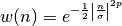
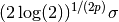
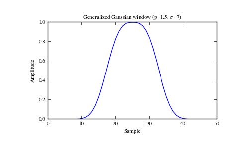
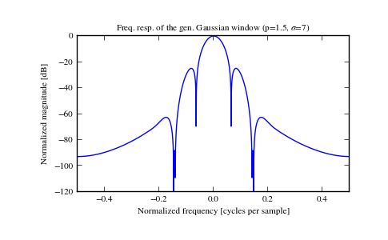

scipy.signal.general_gaussian¶
- scipy.signal.general_gaussian(M, p, sig, sym=True)[source]¶
Return a window with a generalized Gaussian shape.
Parameters : M : int
Number of points in the output window. If zero or less, an empty array is returned.
p : float
Shape parameter. p = 1 is identical to gaussian, p = 0.5 is the same shape as the Laplace distribution.
sig : float
The standard deviation, sigma.
sym : bool, optional
When True, generates a symmetric window, for use in filter design. When False, generates a periodic window, for use in spectral analysis.
Returns : w : ndarray
The window, with the maximum value normalized to 1 (though the value 1 does not appear if the number of samples is even and sym is True).
Notes
The generalized Gaussian window is defined as

the half-power point is at

Examples
Plot the window and its frequency response:
>>> from scipy import signal >>> from scipy.fftpack import fft, fftshift >>> import matplotlib.pyplot as plt
>>> window = signal.general_gaussian(51, p=1.5, sig=7) >>> plt.plot(window) >>> plt.title(r"Generalized Gaussian window (p=1.5, $\sigma$=7)") >>> plt.ylabel("Amplitude") >>> plt.xlabel("Sample")
>>> plt.figure() >>> A = fft(window, 2048) / (len(window)/2.0) >>> freq = np.linspace(-0.5, 0.5, len(A)) >>> response = 20 * np.log10(np.abs(fftshift(A / abs(A).max()))) >>> plt.plot(freq, response) >>> plt.axis([-0.5, 0.5, -120, 0]) >>> plt.title(r"Freq. resp. of the gen. Gaussian window (p=1.5, $\sigma$=7)") >>> plt.ylabel("Normalized magnitude [dB]") >>> plt.xlabel("Normalized frequency [cycles per sample]")
